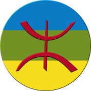

<ons-navigator>
   <ons-page>
        <ons-toolbar>
            <div class="left">
                <ons-toolbar-button ng-click="app.slidingMenu.toggleMenu()"><ons-icon icon="bars"></ons-icon></ons-toolbar-button>
            </div>
            <div class="center">Accueil || Home || Akham </div>
        </ons-toolbar>
        
        <div style="text-align: center">
            <h2>Vocabulaire kabyle.</h2>
                En image (Kabyle | Francais | Anglais ).
        </div>
        <div style="text-align: center">
            
            <p> Vous pouvez faire glisser le menu de la gauche / droite. </p>
            
        </div>
        <div class="navigation-bar">
          <div class="navigation-bar__center">K-zirem (c)</div>
        </div>
    </ons-page>
</ons-navigator>
